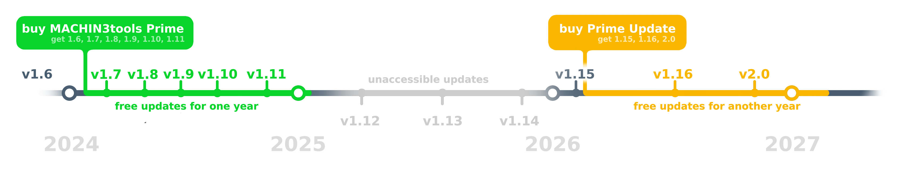
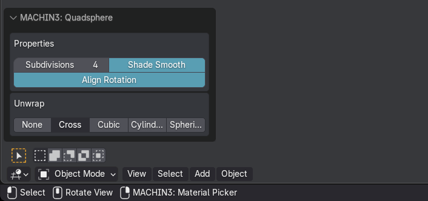
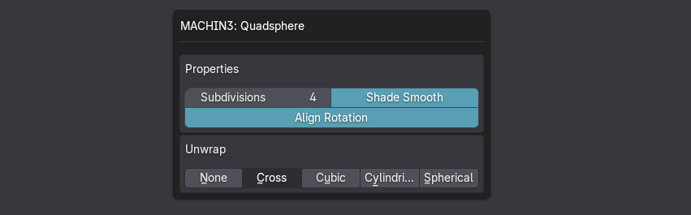
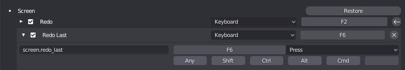
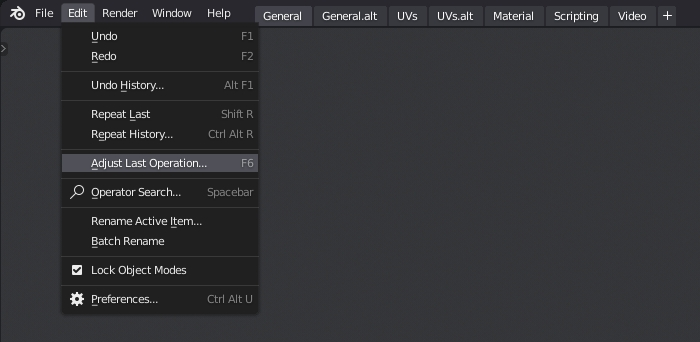
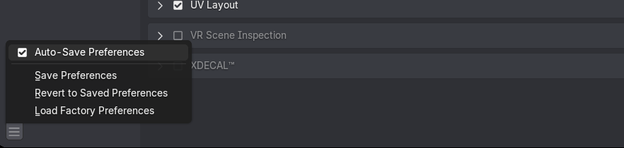

Contents
Purchase and Update
What is Prime and DeusEx?
MACHIN3tools comes in two base variants - Prime and DeusEx.
Prime already contains almost everything - measured in lines of codenot the best way to do it! Prime is 85% of the DeusEx variant.
But DeusEx contains a few more-advanced tools not present in the Prime variant.
They are:
- the Edge Constrained Transform tool
- Group Gizmos and Poses
- the Punch It manifold Extrusion tool, similar to the one in the dedicated PUNCHit addon
- advanced Assembly/Asset tools like Assembly Editing, Assembly Variants, Assembly Origin Orientation/Rotation Adjustment, and more
Where can I purchase MACHIN3tools?
All my addons are sold on two markets:
- Buy MACHIN3tools on Superhiveformerly known as Blender Market
- Buy MACHIN3tools on Gumroad
How to get the Update?
If you have previously bought MACHIN3tools, you can download it by going to the store's site, and then just download the latest version you have access to accordingly.
- Download MACHIN3tools from Superhiveformerly known as Blender Market
- Download MACHIN3tools from Gumroad
See update installation instructions for details on how to do the actual installation once you have downloaded the MACHIN3tools .zip file.
How do paid Updates work?
If you are outside the 1 year free-updates period, I would kindly ask to purchase an update variant which unlocks access to the very latest version again.
Paid Updates work like this:
- A new sale of Prime or DeusEx will include free feature updates for 1 year starting at the purchase date.
- Should there ever be no feature update within that year, then the free update period is extended by another year.
- The download from Superhiveformerly Blender Market or Gumroad will always automatically supply the correct version.
- You just download the addon as you always have from the market.
- Should there be a newer version available than what you have access to - because your original purchase was done more than a year ago - then a download link to your previous version is provided, as well as a message about the new paid update with a link to it too.
- To update to the latest version, purchase the MACHIN3tools Prime or DeusEx Update Variant on Blender Market or Gumroad - depending on where you bought your MACHIIN3tools base variant.
- For Prime you need the Prime Update Variant.
- For DeusEx you need the DeusEx Update Variant.
- The link directly to the required update variant is also provided to you on the Update Available page you see, when you access your download.
I think this update system is fair to you and to me.
I think it's easy, transparent and straight forward to use. If you have any question however, feel free to reach out.
Why aren't Updates free?
Continuous updates require continues work, and so continuous time spent on development and documentation. MACHIN3tools was completely free for the first 3 years of its existence, which was my way of giving back to the community.
In 2021 - with the 0.8 release - I introduced the optional DeusEx variant which added a few more advanced tools, that could have easily been dedicated single purpose addons, in fact many other tools in MACHIN3tools could be as well.
I did charge a little for DeusEx, but kept the base Standard variant free and kept adding to and evolving it too.
Last year in 2024 - with the 1.8 release - I had to retire the free Standard variant and introduced the paid Prime variant of MACHIN3tools, in an attempt to counter a decline in revenue I had already seen for about a year then, and so to continue being able to pour significant development resources into MACHIN3tools.
It's one year later now, and the decline has unfortunately only accelerated, in particular over the past 6 months.
Hence why I have no choice now but to charge a little for feature updates.
The reality is MACHIN3tools was always extremely under-priced for the amount of tools it contains, and was heavily subsidized by the success of my other addons, in particular DECALmachine and MESHmachine of course, which are priced more realistically.
I work constantly on these addons - it's all I do, to the point that I have pushed my own artistic ambitions to the side for almost a decade now - and I could just release dedicated smaller addons, as a result of that work - like other creators do, but instead I have so far chosen to evolve my existing addons, tools and workflows, and have released these efforts as free updates.
With a decline in revenue across the board, this is no longer a working strategy now however.
So some change is unavoidable now.
You promised free updates forever!
No, I never did that. Not once did I ever promise anybody free updates for life. Instead, I have told anyone who asked about it, that I can only continue doing this for as long as there are sufficient new sales.
This is no longer the case now, and hasn't been for a few months.
This is not a hobby for me. It's what I do, and how I pay my bills and provide for my family.
Blender is free, addons must be free too!
Blender is free for you because it’s sustained by tens of thousands of donors and a well-established funding structure. That level of financial support enables full-time employment for a dozen or so developers, infrastructure, and long-term planning.
I am unfortunately not in that position - and my addons would never have existed, had I tried to build them relying on donations.
Despite what the Blender Foundation often claims - that there is a proven open source business model - the truth is that this model only works under very specific conditions: institutional backing and huge corporate sponsors - 60%-70% in Blender's case1, a massive user base and consistent, high-volume donations. No independent developer has that luxury.
The open source world is littered with abandoned projects. Not because they weren’t useful or well-made, but because the people behind them couldn’t afford to keep working for free and burnt out. Relying on voluntary contributions is not a business model; it’s a gamble.
The harsh reality is this: people overwhelmingly expect software for free, but very few are willing to contribute financially in return. Even popular, widely used tools often receive only a trickle of donations. That’s not sustainable.
Putting a price on addons is what allows artists like me to invest time, effort, and long-term support into making tools that work, evolve, and expand on what Blender is and can do. If we want a thriving ecosystem of powerful, well-maintained tools around Blender, we need to stop treating paid addons as a betrayal of open source ideals.
They are what keep independent development alive. In fact, they are what keep Blender truly independent.
Update Pricing
If you bought MACHIN3tools less than a year ago, then the latest version is free for you.
I want to keep update prices as low as possible, and originally intended to do 10% of the product price, but with MACHIN3tools already priced so low and with market fees as high as they are - including a flat fee of $0.49 for payment processing, I can't do just 10% for MACHIN3tools or I wouldn't earn anything, which would defeat the purpose.
And so
- the Prime Update will be $2.00 - of which I earn ~$0.70 after taxes
- the DeusEx Update will be $4.00 - of which I earn ~$1.70 after taxes
- active Patrons in the
- Army tier are entitled to free MACHIN3tools feature updates
- Core tier and above are entitled to free feature updates on all my products
Is this a subscription?
No it's very much not a subscription, because I'm not forcing anybody to update to use MACHIN3tools. Not now, not ever. You are free to use the version you already have access to for as long as you like (with the supported Blender versions).
Still, I expect significant push-back, simply based on the push-back and bad ratings I got in response to retiring the Standard variant and introducing Prime before.
But as I said, I have no choice. It is what it is.TM
I can't be expected to work for free, or I'll be out of business in a year or so.
That all said, if this goes well, then I'm open to extend the 1 year period to 2 years. Nothing is set in stone here, I'll be flexible, and just have to see how it goes.
If it doesn't go well, then I'll have to stop doing these huge workflow addons with dozens of tools and dozens of updates, and instead switch gears and work on smaller, single-purpose addons, that I can push out in the same time or less then I'd usually spend on these big feature updates, like many other creators in the space do and have been doing for years.
Can I skip updates?
Absolutely!
 original Prime purchase and a delayed Prime Update variant purchase
{kind=link}
Let's say I release MACHIN3tools 1.12 in May 2025, and you have previously bought MACHIN3tools in January 2024, which means the most recent version you have access to is MACHIN3tools 1.11.1 from November 2024.
You don't think the 1.12 release is worth itand I disagree :), so you just wait.
Let's pretend on February 1st 2026 MACHIN3tools 1.15 drops. You jump on it this time, and from then on you'll have access to MACHIN3tools 1.15 and all other feature udates updates, that may release between February 1st 2026 - your update purchase date - and January 31st 2027, so one year later.
Installation
How is MACHIN3tools installed?
See the Installation guide for more details and do note the Blender version requirements and ensure that your system console and with that your blender configuration are in order!
Note
If you want to run MACHIN3tools on an older Blender version outside of the currently supported range, you can reach out to me via email and I'll supply an older addon version.
Does MACHIN3tools work in Blender 5.0-alpha/beta?
Using experimental builds of Blender, you are at risk of encountering sudden failures of addons that used to work just fine the day before.
I can't make any guarantees if things will keep working. Fixing things that break in experimental Blender builds will not be a priority, until the experimental build approaches release.
Does the MACHIN3tools work on macOS?
Yes, 100%.
MacOS users should install Blender properly, by following the official instructions.
Avoid running it just from the Downloads folder!
Note that, for dragging of files and folders, you need to hold down the COMMAND key.
This will ensure AppTranslocation2 is avoided.
{kind=link}
Furthermore, your download may not actually result in a .zip file, and instead extract automatically. This can and needs to be be changed in Safari settings.
Does MACHIN3tools work on Arch Linux?
Yes, 100%. In fact, I've never used Blender on anything but Linux myself.I don't use Arch btw
Arch Linux users and users of other Arch based or similar rolling release distros are advised to use the official Blender builds.
The Blender package in the Community repository does not supply its own Python, and does not follow official recommendations.
As a consequence, your system's python version may not work properly with Blender and/or MACHIN3tools or any other addons.
Note
Use the official tarball from blender.org to be on the safe side, it comes with a bundled Python and is the correct version that Blender addons are built against.
Get support
Attention
Note the Requirements in the installation guide.
Make sure you are using the latest version.
Confirm you've seen the installation guide.
General information
To provide help, I need the following:
- system-info.txt file - as generated by the Get Support tool.
- system console output - as shown in the video below
- Purchase Receipt - as provided by Superhive or Gumroad
Keep in mind
Please do use the Get Support tool in the addon preferences to create the system-info.txt file.
Don't create it from Blender's help panel. It's a different one.
Failed Installation
If your MACHIN3tools installation fails, it's almost guaranteed, that this is due to addon/blender version mismatches, other faulty or version mismatched addons, system python version mismatches or general blender configuration issues, such as files in Blender's addon directory that shouldn't be there.
All of these can affect installation attempts of new addons and cause them to fail, as they often cause a cascade of errors.
None of this would be the fault of the new addon, but all of these would be obvious from the system console output.
If you encounter this and can't resolve these issues on your own, then it is essential to send me the entirety of the system console, not just a screenshot of the end. In fact the beginning is often more important in these cases. I go over this and more in detail in the installation video.
Addon Error/Exception
If you are seeing an error/exception caused by MACHIN3tools, please also send me the system console output, ideally copied in text form, not just a single screenshot of the error popup, as that may not cover sufficient context.
Keep in mind
 On Windows you can turn on the console from Windows > Toggle System Console.
On Linux and MacOS, you need start Blender from a terminal.
On Windows you can turn on the console from Windows > Toggle System Console.
On Linux and MacOS, you need start Blender from a terminal.
I do not need an image of Blender's Info View and I don't need to see Blender's Python Console either.
.blend file to re-produce the issue
If an error only occurs in a specific .blend file or in a certain blender context and you can reproduce it, please attach the blend file to your email as well.
Try to remove remove any part of the model that doesn't contribute to the problem to keep the file size down.
Contact
Use eMail, not X, not Youtube, not Artstation, not Superhive messages, and not the Blender Artists thread for reporting of any issues or problems you have with the Addon.
Just use email. I tend to be very responsive, but please be patient.
Blender
What is the System Console?
How can I get the Quad Sphere popup? How can I adjust a tool's properties afterwards?
In Blender the result of most tools, can be adjusted, after a tool has been called.
In case of Quad Sphere for instance, you can set various properties to modify the way the sphere is created.
There are 3 ways to do this:
1. Panel
 the operator properties panel at the bottom left of the screen
2. Popup from Keymap
 Redo Last popup called via a shortcut

the default keys are F9 or F6 depending on your chosen keymap
If you like using the popup, consider mapping it to a button on your mouse, which is how I do it.
3. Popup from Menu
 the Adjust Last Operation entry in the Edit Menu
Why are my Keymap (or Settings) Changes not remembered after Blender re-start?
First off, please do make sure any changes you make are actually saved.
Note
You may have to manually save your preferences, if you have disabled Auto-Save, at the bottom left corner of the preferences window.
 Blender Auto-Save preferences
Manually saving Blender's preferences
If this does not resolve your issue, then know that keymaps - and sometimes addon preferences - "not sticking" is a well known, Blender issue, that's impossible to reproduce for me.
Past reports indicate that it not related to MACHIN3tools (or any addon in particular), but that it's deeper Blender issue.
It tends to happen when:
- People import blender preferences from a previous version.
- People import blender keymaps from a previous version.
- People use App templates.
In theory any installed addon could also affect this and mess with keymaps of other addons, if not properly implemented perhaps, or if somehow misbehaving.
For instance - without putting any blame on it - a significant number of people reported that disabling hair tool (and re-enabling it again) resolved their MACHIN3tools keymap issue.
You may also try disabling MACHIN3tools itself, and re-enabling it of course - but do note that this will reset all your MACHIN3tools keymaps and preferences.
What will definitely work is starting from a fresh Blender config.
Often people have a number of issues with their Blender config, without being aware of it. Please see the installation video for details on how to spot them. So if you do this, re-activate your addons one-by-one, and keep and eye on the system console, in particular after a Blender restart.
MACHIN3tools
What does Severely Hidden mean?
I use the term severely hidden to refer to objects, that are only in either excluded or hidden collections.
They are severely hidden because toggling their visibility normally has no effect, and so not only can't they be seen, they also can't be selected.
In addons like HyperCursorin pre-release on Patreon mod objects are optionally moved to such a hidden collection for scene-organizational purposes.
In MACHIN3tools tools like Shade Smooth/Flat, Assembly Asset Creation or Select Hierarchy need to be able to act on these objects, and they achieve that by linking the objects (sometimes temporarily only, and invisibly to the user) to the main scene collection.
Other Addons
Why is there a separate PUNCHit addon? How is it different from the Punch It tool in MACHIN3tools DeusEx?
The tool in the dedicated PUNCHit addon is different as of PUNCHit version 1.1.
Originally I included the same manifold extrusion tool in MACHIN3tools DeusEx, as a sign of gratitude for the existing DeusEx users, who chose to buy DeusEx while the Standard variant was free.
Unfortunately, with both addons on the market, many people bought PUNCHit the addon, only to later realize - despite it being explained it BIG LETTERS on the product page - that the same tool is also available in MACHIN3tools DeusEx.
Many refunds followed, due to Blender Markets duplicate purchase policy - which shouldn't even have been applied - but which created overhead and frustration for me, the customers, and Blender Market staff.
So, from now on, PUNCHit - the addon - will be the only one receiving feature updates, while Punch It - the tool in MACHIN3tools Deus Ex - will only receive maintenance updates.
-
Page 48 in the Blender Foundation Annual Report 2023 ↩
-
Learn more about AppTranslocation. ↩